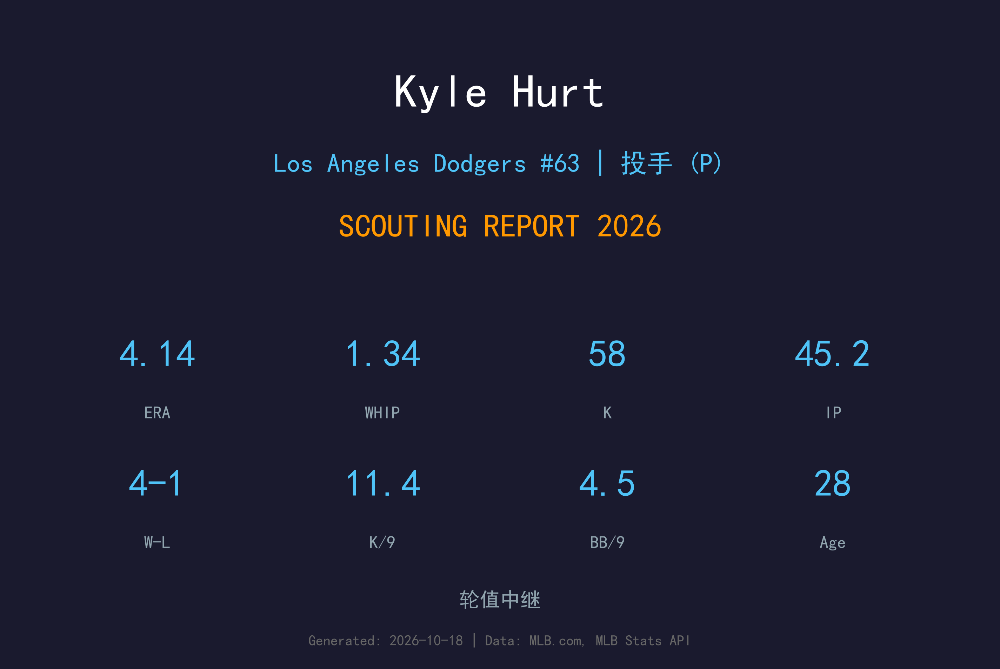
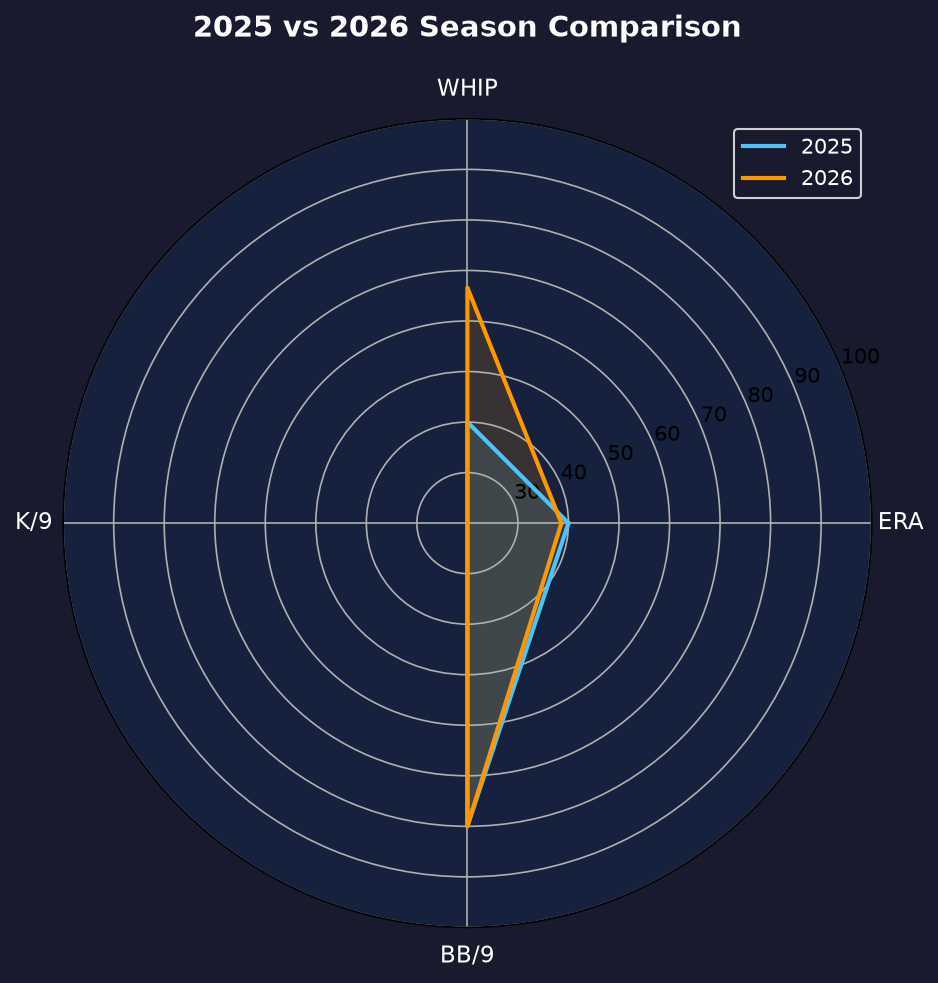
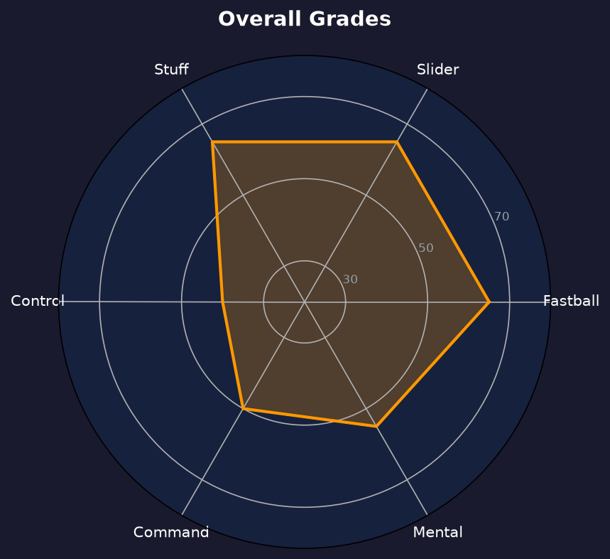

Los Angeles Dodgers | 后援投手 | 右投 / 右打 | 三振型火球中继

Kyle Hurt 是道奇 2020 年选秀第 5 轮选中的三振型右投，2026 年 4 月 13 日上调后交出 44 场、58 次三振（11.43 K/9）的火力演出。他的速球与滑球组合能在任何局面制造挥空，是道奇牛棚里最纯粹的"三振型"中继。
2026 年他缴出 4-1、4.14 ERA、1.34 WHIP、9 次 hold 的成绩单。三振率耀眼，但 4.53 BB/9 的保送率让每局都充满变数——当他控球在线时他是 elite，失控时则步步惊心。
28岁的 Hurt 正处于"从上下漂泊到站稳名单"的关键窗口。2027 年他的目标是把 BB/9 压到 3.5 以下——如果做到，他将是道奇牛棚里价值最高的中继之一。
以道奇选秀身份登上大联盟，开始在大联盟与小联盟之间浮沉的旅程。
44 场出赛、11.43 K/9，用三振火力证明了自己制造出局的能力。

Hurt 2025 年因伤病出赛极少，本页对比图表由脚本根据最终数据自动生成。
11.43 K/9 在道奇牛棚中仅次于少数火球男，但 4.53 BB/9 意味着他每两局就送一个人上垒。他的 0.99 HR/9 控制得不错，大多数失分来自保送后的连环安打。inherited runners 仅 2 人（1 得分）说明教练团倾向让他从空局开始投——这是对他火力但缺乏控球稳定性的精准使用。
球速：96-99 mph
评分：A-
他的三振基底。6'3" 体型投出的速球 late life 极佳，打者经常挥空。
球速：86-89 mph
评分：A-
位移锐利且下坠晚，是他制造挥空的主要手段，与速球的速度差完美。
Hurt 的投球哲学简单粗暴：速球抢好球数、滑球终结打者。当滑球落在好球带边缘时，打者只有两个选择——挥空或目送三振。这种风格让他的 K/9 高达 11.43，但也让他的球数消耗极快（16.25 球/局）。
23 次保送中大多数来自滑球失控——当他无法把滑球投进好球带，打者就会耐心等速球。4.53 BB/9 是他从"可用中继"升级为"可信中继"的唯一障碍，也是道奇投手组 offseason 与他重点攻关的课题。
44 场出赛是他生涯最完整的赛季。9 次 hold 与 10 次收尾显示教练团给了他越来越大的责任，而他用 4-1 的战绩回应了这份信任。这是一个"证明自己属于大联盟"的成功赛季。

三振火力惊人、控球拖后腿的双刃剑中继
B 级 / 火力型中继
Kyle Hurt 的2027赛季目标是降低保送率，成为道奇牛棚中"任何时候都能上"的可信中继。他的三振火力已经无需证明，剩下的只是控球的最后一公里。
2026：4/13 上调 → 44 场 11.43 K/9、9 hold
2027：目标 60+ 场、BB/9 ≤3.5、ERA ≤3.50
2028+：若控球改善，可竞争主要 setup 角色
Kyle Hurt 出生于佛罗里达州 Rockledge，2020 年 MLB 选秀第 5 轮被洛杉矶道奇选中。大学时期他曾以先发投手身份培养，进入职棒后道奇将他转为后援，希望利用他的球速与体型优势制造大量三振。
2023 年 9 月 12 日他完成大联盟首秀，过去几个赛季他在大联盟与小联盟之间起伏，始终未能完全站稳。但 2025-26 年的三振数据持续证明他有能力在大联盟制造出局——缺的只是一个完整的健康赛季和更稳定的控球。
场外的 Hurt 以努力与韧性著称，队友们欣赏他在被下放后从不抱怨、每次召回都全力以赴的态度。2026 年 44 场的出赛是他职业生涯至今最稳定的回报。